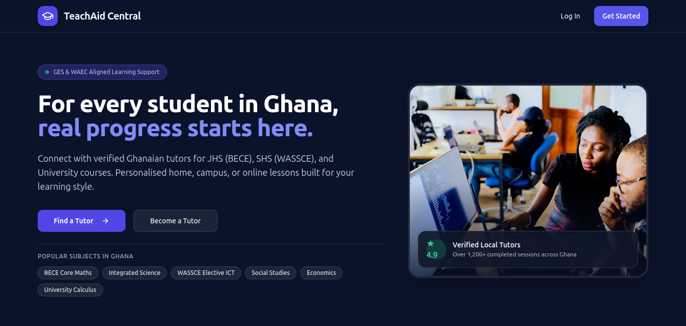
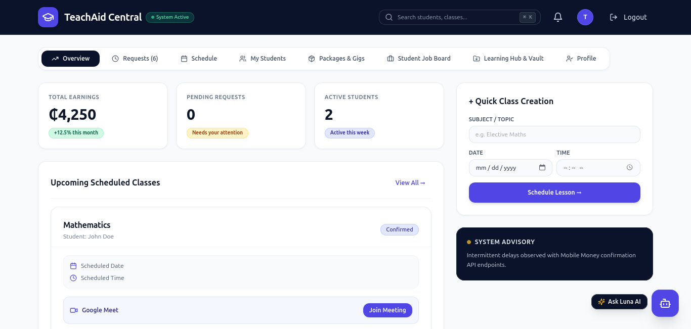
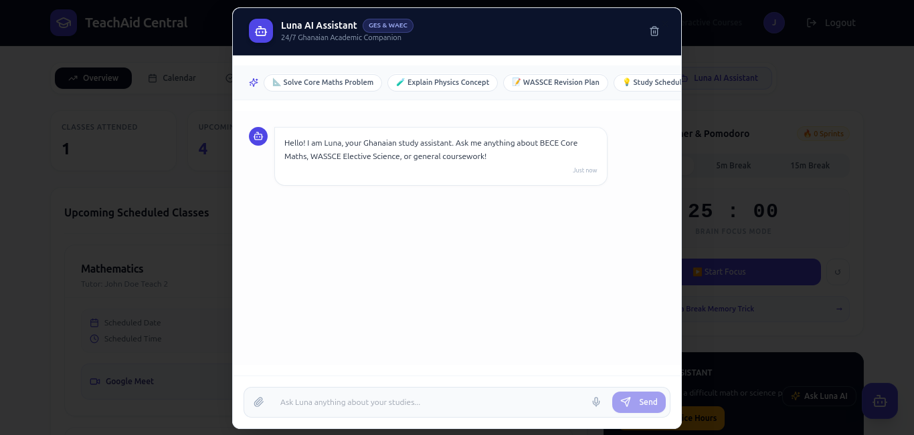

For every student in Ghana, real progress starts here. A comprehensive platform connecting verified tutors with students for JHS, SHS, and University courses.

Built as a final-year project at Ho Technical University, TeachAid Central was designed to solve a specific logistical problem in the Ghanaian education system: seamlessly connecting students preparing for critical exams (BECE, WASSCE) with verified local tutors. The platform needed to handle scheduling, payments, and remote learning facilitation in one cohesive environment.

The dashboard provides tutors with a unified view of their active students, total earnings, and pending requests. A "Quick Class Creation" module streamlines the scheduling process, while the integration of Luna, a 24/7 AI Study Companion, offers students immediate assistance with complex equations and science concepts outside of scheduled tutoring hours.
